Voice Commander Forever
How to use it: a guide
By TheZenaxa. For VCF (English) and VCFI (other languages): they work the same way.
Turn the pages with the NEXT and PREVIOUS buttons at the bottom, or the arrow keys on your keyboard.
The MIC IS box
This small box shows what VCF is doing. It sits over your game.
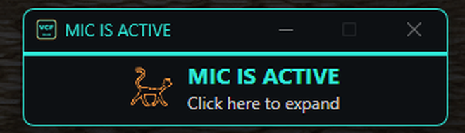
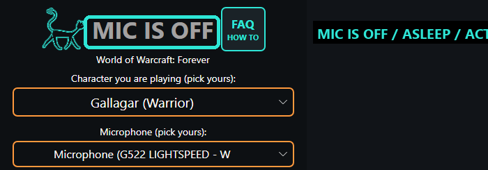
- MIC IS OFF: nothing is listening.
- MIC IS ASLEEP: it listens only for your wake words, and for voice shrink, voice expand and voice disable.
- MIC IS ACTIVE: it listens for your commands.
Back into the game: one click
When you click on the MIC IS box or the Control Panel, your keyboard belongs to VCF, not the game. Voice commands then do nothing.
- Do what you need in VCF.
- Click once on the game window.
- Now your voice commands reach the game again.
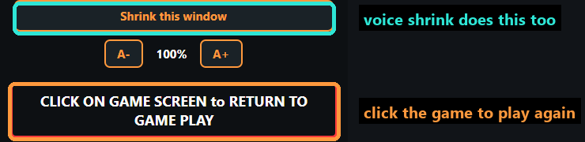
Change the words of a command
Every command has two parts. You change only one of them.
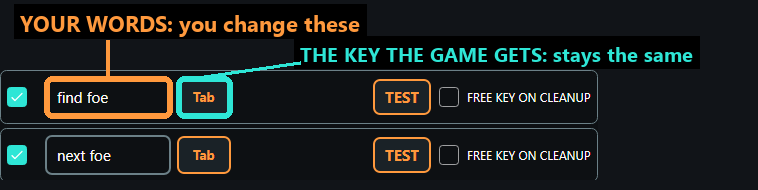
- In the MIC IS box, click Open the control panel.
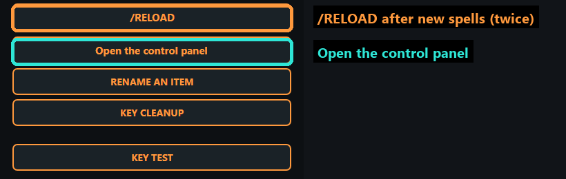
- Find the command. Click in its words and type the words you want to say.
- Click CLICK HERE TO SAVE CHANGES.
- Click the game window again.
For example: change find foe to enemy, and the game still gets Tab, the same as before.
More than one way to say it
Put commas between them: fireball, burn them. Either one works.
Similar words are fine: pee one heal and pee two heal can both exist.
Your own command
In the Control Panel, click ADD YOUR OWN COMMAND. You choose the words, and what it does in the game.
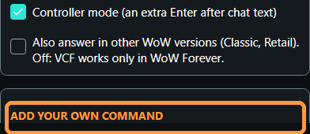
New spells: reload twice
When you learn new spells, VCF needs two reloads of the game:
- Click /RELOAD on the MIC IS box (or say voice update reload, then yes do that).
- When VCF tells you to, do it one more time.
The first reload reads your new spells. The second gives each one the key it needs, so the chat box never opens.
/zenvc bars: spells with no place yet
Sometimes the game's chat says to type /zenvc bars. It comes from VCF's helper in the game: some of your spells are on no action bar, so your voice may not reach them.
- /zenvc bars shows a plan in the chat. Nothing changes yet.
- /zenvc bars yes carries out the plan: it puts those spells on the empty slots of a completely empty action bar, each with its own key. It never replaces anything you placed.
- /zenvc undo takes them off again.
Type them in the game's chat, out of combat. Then still reload twice.
EXPORT and IMPORT: your safety copy
In the Control Panel: SHARED PROFILES.
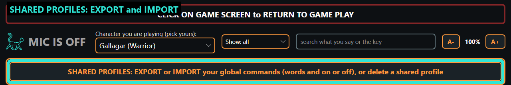
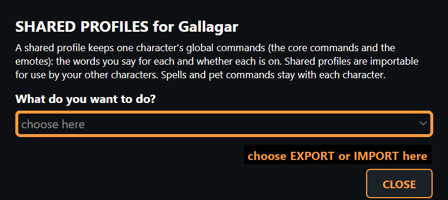
- EXPORT saves this character's commands: your words, and which are on or off.
- IMPORT puts a saved copy onto a character: a new one, or the same one after a mistake.
Voice expand and voice shrink
Say voice expand to make the MIC IS box bigger, and voice shrink to make it small again. These work even while the mic is ASLEEP.
You can move the box anywhere on your screen.
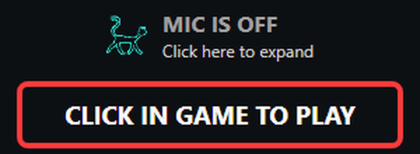
Voice disable
Say voice disable to turn the microphone fully off. VCF then hears nothing at all, not even your wake words.
To turn it on again (or off), press your mic key, or click the MIC IS box with your mouse.
All of these words (voice expand, voice shrink, voice disable, voice update reload) can be changed in the Control Panel, under WORDS FOR THIS PROGRAM ITSELF.
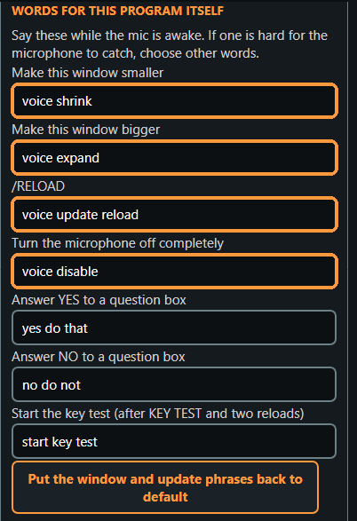
Where messages show up
On the MIC IS box: what was heard, and the next thing to do.
In the game's chat window: lines from VCF's helper in the game.
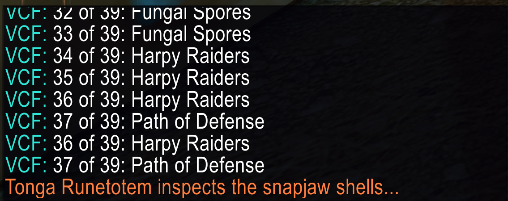
Under the outline: when VCF puts its outline on something, a box in the lower middle of the screen tells you about it, and what to say.
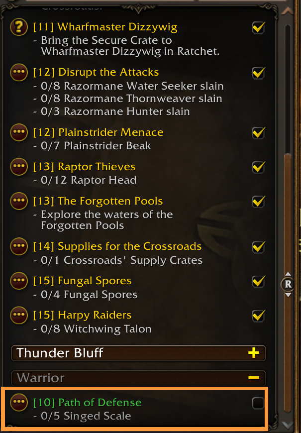
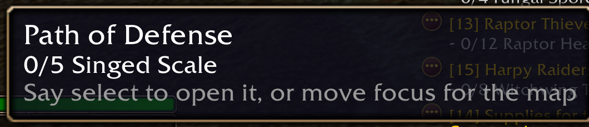
There is more
This guide shows the basics. There is much more: moving through windows by voice, the map and quest log, reading quests aloud, dictation and more.
- The FAQ, from the MIC IS box: answers to many questions.
- The glossary: every command and what it does.
Please tell me about anything that goes wrong: vcfireports@gmail.com
Thank you for playing with VCF. -Z.